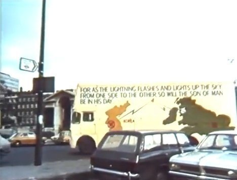

1973
1973 feb. 100 europeiska medlemmar organiseras som IOWC i Amerika.
. CARP etableras i USA.
Mediet Jeane Dixon introducerar Sun Myung Moon vid Waldorf Astoria Hotel i New York City, 1973.
Jeane Dixon - En messiansk vision 1962
Moderna profetior Anthony Brooke vittnar om Sun Myung Moon i Norge
Juli 1973 Vår missionär i Reykjavik (Island), fröken [Ase] Ulimoen, gick till en föreläsning i hopp om att
hitta några fördomsfria och sökande människor bland åhörarna som hon kunde vittna till. Hon blev förvånad över att
höra att Mr Brooke var en "gammal vän till familjen" och att han återigen upprepade i sina samtal med olika
människor efter föreläsningen ett meddelande som han förkunnar från "de andliga världarna". Innehållet i detta
meddelande var helt enkelt "Vänd blicken mot Korea!"
När han hänvisade till andra telepatiska kommunikationer som Greta Ahlberg (finskt medium) fick, sa han att
de talade om en stor och plätslig förändring i det mänskliga medvetandet, inom en inte alltför lång framtid. Om
mänskligheten INTE var tillräckligt förberedd för denna förändring, skulle fruktansvärd förvirring och kaos bli
resultatet.
Det fanns en möjlighet att denna förändring skulle komma till stånd genom någon "energiexplosion", inte
nödvändigtvis atomenergi. Han talade också om telepatiska meddelanden som skulle nå människor direkt i den
situationen och "överbefälhavaren" som skulle skicka ut dessa telepatiska meddelanden som huvudsändare skulle
vara Sun Myung Moon.
GUDS PLAN FÖR KOREA
Moderna profetior Efter enandet av Syd- och NordKorea är Korea världens mäktigaste andliga
land. Det kommer att bli världens ekonomiska kraftverk .... Många profeter har ett öga mot Korea.
Världen: Vulkanutbrott
20 december 2021 började ett vulkanutbrott på Hunga Tonga-Hunga Ha'apai, en undervattensvulkan i
Tonga-skärgörden i södra Stilla havet.
15 januari 2022 exploderar vulkanen, likt en enorm kärnvapenexplosion, som kunde ses ända till satteliter i rymden.


Mer om profetior;
Se www.slideshare.net/bdp003/search_my_uploads?type=&new=&q=prophecy
1 mars 100 dagars träningskurs av Principerna startar i Amerika.
3 witnessing-bussar utrustas i England. En buss döps till "Samson"

"Jag etablerade en insatsstyrka när jag var i Storbritannien och köpte dem ett center. Jag åkte till Tyskland och köpte dem sex minibussar och sex släp, vilka varje kan ge sovplats för åtta personer. Uppradade, sträcker de sig över 100 meter. Det var så stort. Efter att tagit emot allt detta från mig, kunde de göra något annat än att arbeta hårt? Nu står Storbritannien och Tyskland i väckelsebrand. /SMM 1972/05/09
Första i Sverige gjorda översättningen av Divine Principle till svenska klar.
Det fanns en tidigare (A4-format) gjord i Tyskland före missionärer kom till Sverige.
6 maj Professors World Peace Academy grundas.
. New Hope Singers International
1 jun Första utgåvan av 'Unification Thought'.
1 juli Segerrik firardag.
18 juli Song Jin Han och Dok Suk Kim välsignas i Japan.
Motto 1-1-1. Om ni lägger ihop 12 och 72 för ni totalt 84. Om ni dessutom multiplicerar 12 personer med
sju är, för ni totalt 84. Om vi inte är förenade med våra egna 12 apostlar och 72 lärjungar, kan vi inte bygga
bron som leder till Guds rike på jorden, som Jesus ville etablera. Därför har var och en av er en individuell
uppgift att bygga bron för att nå Guds rike på jorden genom att vägleda 84 andliga barn.
Det är därför vi har mottot 1-1-1.
Varje medlem bör vägleda åtminstone ett andligt barn per månad.
Detta är kärnan i standarden för att återupprätta världen.
Single Mindedness at the Risk of
Your Life July 8, 1973--Tokyo, Japan
6 aug. Han åker till Amerika.
15 aug. Firandet av befrielsen av Moon's familj.
mars Världen::

Militärkupp i Chile 1973
ägde rum den 11 september 1973 då den demokratiskt valde, socialistiske presidenten Salvador Allende
störtades av den chilenska militären under ledning av general Augusto Pinochet.
22 sep 1973 the New York Daily News carried a large photo and article on the Day of Hope rally
on the steps of Federal Hall on Wall Street.
1 okt.- 29 jan. 74 'New Future of Christianity', Allmän talarturne i 21 stöder i Amerika.
11 nov. Han återvänder tillfälligt till Korea.
17 nov. Han kommer till Japan.
18 nov. Den andra vetenskapskonferensen hålls i Tokyo på Teikoku Hotel.
30 nov. Han ger ut 'En förklaring av Watergate', i New York Times och i Washington
Post. Budskapet lyder "Förlåt, älska och förena er."
27 dec. Little Angels bjuds in att uppträda offentligt inför FN:s nationalförsamling i New York.
Svenska familjemedlemmar besöker präster och
delar ut den nya Principboken samt erbjuder tidningen"Nytt Hopp"
med talen.
På gatorna, i religiösa och politiska grupper och i studenthem letar vi efter nya bröder och systrar.
En översättning av "Domens tre steg" sänds ut till 400 kristna.
Ett piano har köpts in för att kunna samla människor genom sång och musik.
Svenska korrespondenten för "The Way of the World", Jan-Peter Östberg, skriver om en intervju med teologen
dr. Lönnebo.
Många i Sverige är negativa mot USA och speciellt president Nixon.
En temakväll om Watergate Deklarationen hålls.
Oficiell engelsk version av Principerna v.1973 publiceras. ("svarta boken")